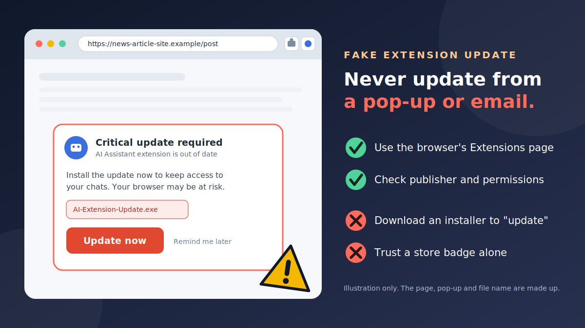

You are reading an article when a box slides over the page: "Critical update required. Your AI Assistant extension is out of date. Install the update now to keep access to your chats." It looks urgent and official, and it names a tool you actually use. That is what makes the fake AI browser extension update scam work. Updating feels like the responsible thing to do, so people click.
How the fake AI extension update scam works
There are two main routes, and they often overlap. In the first, the alert comes to you. In the second, the extension on your computer is the problem.
Route 1: A fake update alert reaches you
A web page pop-up, an email, a social media ad, or a message says your AI extension, or your browser, needs an urgent update. It may pretend to come from the extension's developer or from the browser. The "update" is usually a file to download, a page that asks you to sign in, or a link to a copycat extension listing.
- The alert. "Your AI extension is out of date" or "Critical update required."
- The pressure. It says you will lose access, your chats, or your browser's safety.
- The action. You are told to download and run a file, add a different extension, or log in to "confirm."
- The damage. Malware is installed, a copycat extension takes your data, or a phishing page captures your login.
Route 2: The extension itself turns bad
Security researchers have documented several ways an AI-themed extension can be the threat.
- Copycat AI extensions in the official store. LayerX reported a campaign it called AiFrame, with 30 extensions and more than 300,000 users, posing as AI assistants such as ChatGPT and Gemini. Instead of running the AI locally, they loaded a full-screen page from a remote domain, which let the owners change what the extension did without a new store review. Stolen data could include email content and browsing information.
- Clones of a real extension. OX Security described two extensions with more than 900,000 downloads that copied a legitimate AI sidebar extension. They asked for consent to collect "anonymous analytics" but instead sent users' ChatGPT and DeepSeek conversations to the attackers. One had a Chrome Web Store "Featured" badge. Secure Annex has called this tactic "prompt poaching."
- Fake ChatGPT helpers. Researchers also reported at least 16 extensions posing as ChatGPT productivity tools that took session tokens, which can let someone use your signed-in account.
- Extensions that generate fake update pop-ups. Reports in 2026 linked aggressive fake "Update Chrome" warnings to browser extensions that fetched scripts from outside servers. Clicking the prompt downloaded a script or program instead of a real update. Such extensions can look trustworthy, with thousands of users and high ratings, and some change after being sold or taken over by new owners, who then push updates quietly.
How the two routes connect
| Trick | What you see | What really happens |
|---|---|---|
| Fake update pop-up | "Critical update required" over a web page | You download malware or are sent to a copycat listing |
| Fake developer email or ad | "Your AI extension will stop working. Update here" | A phishing page or a bad installer |
| Copycat AI extension | A familiar name, a "Featured" badge, many reviews | Your chats, tokens, or email content are sent away |
| Extension that changes later | A tool you installed long ago starts showing odd pop-ups | A new owner or a remote script has changed its behaviour |
What a bad extension can reach
Extensions sit inside your browser, where you do your banking, email, and AI chats. Chrome's own help page explains that you can allow an extension to automatically read and change data on the current site or on all sites. An extension with that broad access can see what you type and read on those pages. Dark Reading's report on the AI chat theft campaign noted that conversations can contain card images, cloud passwords, and API keys that people paste into chats. If you use a work account, the exposure can extend to your company.
What many guides miss
- A store listing is not proof of safety. The copycats above were distributed through the official Chrome Web Store, and one had a Featured badge. The store is the right place to install from, but you still need to check the publisher and the permissions.
- Extensions can change after you install them. A remote script, a quiet update, or a change of owner can turn a harmless tool into a harmful one, so one check at install time is not enough.
- Real updates are mostly invisible. Google's enterprise documentation says Chrome extensions update automatically when Chrome is running. A genuine update normally does not need you to download and run anything, so any alert that asks you to is suspect.
- The "update" alert may come from inside your browser. If you see fake update pop-ups on many unrelated sites, an installed extension may be generating them. Removing the extension, not clicking the pop-up, is the fix.
- AI extensions see unusually sensitive text. People paste passwords, documents, and keys into AI tools, which makes AI add-ons especially valuable to thieves.
Warning signs of a fake AI extension update
- The alert is on a web page, in an email, or in an ad, not on your browser's own Extensions page.
- It asks you to download and run a file, especially one ending in .exe, .msi, .vbs, .zip, .dmg, or .crx.
- It says "critical," "urgent," or "your chats will be lost" and sets a short deadline.
- It tells you to turn on developer mode, load an extension from a folder, or install from a website instead of the store.
- Pop-ups claiming Chrome or an extension needs an update appear on many unrelated sites.
- An extension suddenly asks for new or broader permissions, such as access to all sites.
- The extension has a new name, publisher, or look after an update, or its reviews mention pop-ups and redirects.
- It asks for "analytics" consent that seems out of proportion to what it does.
- Your search engine, home page, or new tab page changed without your consent.
- The sender or address is not the developer's own, or the link goes through a shortened or redirect address.
Realistic scam examples
These are composite examples written to show the pattern. They are not reports about real people, and the details are made up.
Example 1: The "critical update" pop-up
- Where
- A box over a news article page
Critical update required. Your AI Assistant extension is out of date. Download AI-Extension-Update.exe to keep access to your chats. [Update now]
Why it's a scam: a web page cannot update your extension, and a genuine extension update does not come as a program to run.
Example 2: The "developer support" email
- From
- "Extension Support" <updates@random-domain.example>
- Subject
- Your AI extension will stop working on 24 hours' notice
A security issue was found. Update to the new version here to keep your saved prompts: [link]
Why it's a scam: a non-developer address, a deadline, and a link. Updates arrive through your browser, not through an emailed link.
Example 3: The copycat AI sidebar
- Where
- A store listing found through an ad
"Free GPT and more AI models in one sidebar." Permissions: read and change your data on all websites. A prompt asks to collect "anonymous analytics."
Why it's a problem: a familiar-sounding name, a free offer, and very broad access. Check who the publisher is and whether the AI company itself offers this extension.
Example 4: The tool that turned bad
- Where
- An extension you installed months ago
Suddenly, "Update Chrome now" boxes appear on every site you visit, and clicking one downloads a script.
Why it's a scam: the browser is not generating these boxes. An installed extension is, perhaps after a change of owner or an update. Remove it.
Example 5: The "install it manually" video
- Where
- A social media video or ad promoting an AI tool
"The store version is outdated. Download the new version from our website, turn on developer mode, and load the folder."
Why it's a scam: loading an extension from a folder skips the store's checks. Never do it because a website or video told you to.
How to check a suspicious update link
- Do not click or download. Press and hold a link to read its address without opening it.
- Check the file type. A link that ends in .exe, .msi, .vbs, .zip, .dmg, or .crx is an installer, not an extension update.
- Find the domain. It is the part right after
https://and before the first single/. - Compare with the developer's real address, which you take from the AI company's own site that you typed yourself, or from the extension's store listing.
- Watch for tricks: extra words ("update," "download," "extension"), hyphens, swapped letters, or odd endings.
- Do not trust the padlock. https only means the connection is encrypted. Fake pages can have it too.
- Check redirects and shortened links, which hide the real destination.
Try the link scanner
Paste a link, and if you know the developer's real address, enter it too. The tool compares them and looks for common tricks. It reads the text only. It does not open the link, and nothing you paste leaves your browser.
How to update extensions safely
The safe route is almost always to do nothing in response to the alert, and let your browser do its job.
- Ignore pop-ups, emails, and ads that say to update. Close the tab, and do not click inside the box.
- Let the browser update extensions for you. Google's enterprise documentation says Chrome extensions update automatically while Chrome is running. Restarting your browser now and then helps pending updates apply.
- Check your browser's own update status. In Chrome, open the menu and choose Help, then About Google Chrome. Chrome will check and apply updates there, and may ask you to relaunch.
- Look at your Extensions page. Open the menu, choose Extensions, then Manage extensions. Confirm each extension is one you installed and still use. If Chrome says an extension needs new permissions or is no longer supported, read the message carefully before you approve it.
- Install only from the official store or the developer's verified website. Type the AI company's address yourself, look for a link to its extension, and make sure it leads to the official store page, instead of searching or clicking an ad.
- Check the store listing before you install. Look at the publisher name, the link to its website, the privacy policy, the last update date, the number of users, and the permissions it asks for.
- Never run a downloaded "update" file, and never turn on developer mode to load an extension from a folder because a website asked you to.
Is this update alert real?
How to review extension permissions
Permissions show what an extension can do. Take two minutes to review them, and repeat every few months.
- Open the Extensions page. In Chrome, open the menu, choose Extensions, then Manage extensions. In Microsoft Edge, open
edge://extensions. In Firefox, openabout:addons. In Safari, open Settings and choose Extensions. Menus can vary by version. - Open an extension's details. Look at who published it, what site access it has, and whether it is switched on.
- Check site access. Chrome lets you choose whether an extension can automatically read and change data on the current site or on all sites. It also lets you add or remove specific sites.
- Match the access to the purpose. A tool that rewrites text you select should not need to read every site you visit. Prefer "on click" or "on specific sites" where possible.
- Remove what you do not need. Remove extensions you no longer use, did not choose, or cannot explain.
- Re-check after changes. If an update adds new permissions, or the publisher changes, treat that as a reason to look again.
| Permission (typical wording) | What it means | What to think about |
|---|---|---|
| Read and change all your data on all websites | It can see and alter pages you visit, including logins and chats | Be very cautious. Only for tools that truly need it, from publishers you trust. |
| Read your browsing history | It can see which sites you visit | Rarely needed for an AI helper. |
| Manage your downloads | It can start or change downloads | Be wary if an AI tool wants this. |
| Access to cookies | It can read data that keeps you signed in | Risky, because sign-in data can be misused. |
| Read data you copy and paste | It can see what you copy | Passwords and keys pass through the clipboard. |
| Communicate with other programs on your computer | It can link the browser to software outside it | Unusual for a simple AI tool. |
These descriptions are general. Wording differs between browsers and versions, so read each prompt, and when unsure, do not install.
Prevention tips
- Install fewer extensions. Each one is a possible way in. Keep only what you use.
- Prefer the AI company's own extension, reached from its official site that you typed yourself, over lookalike "AI sidebar" tools.
- Check the publisher and its website before installing, and be cautious about brand-new publishers with huge user counts.
- Do not install from ads, social posts, or messages. Go to the store yourself.
- Never paste passwords, API keys, card images, or private documents into an AI chat, especially through an extension.
- Use a separate browser profile for banking and work accounts, with few or no extensions.
- Keep your browser up to date through its own menu, and turn on its safe browsing protection.
- Audit your extensions every few months, and remove ones that changed publisher, look, or permissions.
- Use a password manager and two-step sign-in. If a token or password is stolen, extra protection limits the damage.
- At work, ask your IT team to approve extensions by permissions, as Google's enterprise guidance recommends.
What to do if you installed a malicious extension
Act quickly, and do not be embarrassed. Some of these extensions had large user counts and official-looking pages.
- Remove the extension. Open Manage extensions, select Remove, and check the rest of your list for others you do not recognise.
- If you downloaded and ran a "update" file, disconnect the device from the internet, run a full security scan, and consider professional help or resetting the device. Do not keep using it for banking.
- Change passwords from a different, clean device, starting with your email, then AI accounts, banking, and work accounts. Then sign out of all sessions where the service allows it, because stolen sign-in tokens can otherwise keep working.
- Check your AI and email accounts. Review recent activity, saved chats, connected apps, forwarding rules, and recovery email and phone numbers for changes you did not make.
- Rotate API keys and any secrets you pasted into chats or pages while the extension was installed.
- Treat anything you typed or pasted as exposed. If card details, ID photos, or private documents were involved, contact your bank, and see our guide on what to do if ID documents are exposed.
- Reset browser settings if your search engine, home page, or new tab page changed.
- Report the extension. Use the report option on its store page, and tell your IT team if it was on a work device.
- Keep evidence, such as the extension's name, ID, store link, and any download. Be wary of anyone who offers to "clean" your device or recover losses for a fee.
Where to report, by country
| Country | Report to |
|---|---|
| United States | ReportFraud.ftc.gov (FTC), and the FBI's IC3. |
| United Kingdom | Report Fraud (formerly Action Fraud). Forward scam emails to report@phishing.gov.uk. |
| Canada | Canadian Anti-Fraud Centre (1-888-495-8501). |
| Australia | Scamwatch, and ReportCyber if you lost money or information. |
| India | National Cyber Crime Helpline 1930 and cybercrime.gov.in. |
| Singapore | ScamShield (helpline 1799) and the police. |
| Elsewhere | Your national police cyber unit, consumer protection authority, and your bank. |
Conclusion
The fake AI browser extension update scam works because "update now" sounds responsible, and AI extensions sit close to your most private text. You do not need to spot every trick. Never update from a pop-up, email, or ad. Let your browser update extensions through its official store, check publishers and permissions before and after you install, keep few extensions, and never paste secrets into an AI add-on. If you installed a bad one, remove it, change your passwords and sessions from a clean device, and rotate any keys.
Related scams use the same pressure. Read our guides on the fake AI subscription cancellation scam, the fake AI identity reverification scam, the fake AI customer support chat scam, and the fake AI agent payment scam.
Got an alert or link you are unsure about? Paste the text into our free checker for a quick first read.
Frequently asked questions
What is a fake AI browser extension update scam?
It is a scam where a pop-up, email, ad, or a misbehaving extension tells you that an AI browser extension or your browser is out of date, and pushes you to download a file, install a copycat extension, or visit a phishing site. The aim is to steal your logins, chats, or device access.
How do I update a browser extension safely?
Do not update from a pop-up, email, or ad. Extensions installed from your browser's official store are updated by the browser, and Google's documentation says Chrome extensions update automatically while Chrome is running. Restart the browser and check the Extensions page. A genuine extension update never requires you to download and run an installer file.
Can an extension from the official store be malicious?
Yes. Security researchers have found copycat AI extensions in the Chrome Web Store, some with large user counts and even a Featured badge, that stole chats, tokens, or email content. A store listing helps, but you should also check the publisher, permissions, and behaviour.
How do I check what permissions an extension has?
In Chrome, open the menu, choose Extensions, then Manage extensions, and open the extension's details. You can choose whether it can read and change data on the current site or on all sites, add or remove specific sites, and remove it. Be cautious about any extension that wants access to all sites.
What should I do if I installed a malicious extension?
Remove it, run a security scan if you ran any downloaded file, change passwords and sign out of all sessions from a clean device, rotate API keys, treat anything typed or pasted while it was installed as exposed, and report the extension and any losses.
Got an update alert or link you want checked?
Run it through the checker